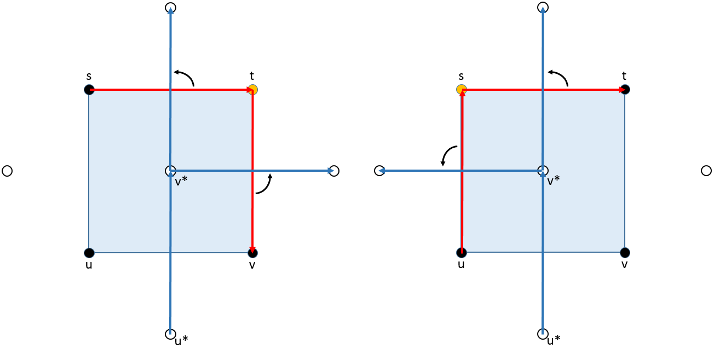

An Introduction to Percolation Theory: Harris's Theorem
A pdf version is available here.
I would like to thank Dr. Sarkar for advising me on this project. With his guidance, I have been able to explore a world where probability theory meets graph theory.
The text I am mainly consulting is Percolation by Bollobás and Riordan. The arguments presented here are virtually identical to the proofs in the book with commentary. None of these arguments I can claim as my own. In writing these sections, I did not want to robotically reproduce their works and so I did my best to recreate them from my mind. Yet, due to the time I spent studying the book, you'll notice that naming of variables, and likely word choice as well, lines up with the presentation by Bollobás and Riordan. This paper focuses on working through the ideas that were not completely obvious to me while reading, as well as providing more visuals to make percolation more accessible. Please contact me if you have any concerns about copyright infringement.
What are the differences between the graphs below?
Going from 0.4 to 0.5 to 0.6, we see more edges are being added. I would like to draw your attention to the size of the clusters, or the clumps of connected edges. At 0.4, the clusters are small; none of them take up more than a quarter of the graph. At 0.5, we see see bigger clusters, and at 0.6, most of the graph belongs to the same cluster.
Of course, we haven't discussed the mechanism behind why we are including edges, but we see a rapid transition from going 0.4 to 0.6. Understanding this transition is the big question behind this paper and is at the heart of Percolation Theory.
What is Percolation Theory? In short, it is the study of rapid transition within a random system. When coffee is percolating, water passes through a filter. If the water did not pass through, we would say percolation did not occur and we would not be able to enjoy our coffee. The fibers in the filter bind in patterns which may allow water to pass through, but what if we changed the probability of the fibers binding slightly? Would water be able to flow through now?
Or consider this: Take two cups of water of the same size and temperature. In one, many many molecules are interacting in a complex way and, in the other one, we also have many many molecules bouncing off each other in a different way. Yet, when we place them in a freezer, once the cups reach 0$^\circ C$, structure suddenly arises in both of them regardless of how the molecules are interacting. Percolation theory provides a way to model these systems. Contrast percolation with a diffusion process. Both percolation and diffusion model the spread of fluid, yet diffusion focuses on randomness regarding the fluid and percolation focuses on the randomness regarding the medium.
Some applications of percolation theory are in material science, neuroscience, information theory, and economics. Percolation theory was born out of the ponderings of Broadbent in modeling mask filters for coal mining (1954). The Monte Carlo simulations to estimate these models were considered some of the most difficult programs of the day. In 1961, the Murray Hill Lab had a program run for 39 hours analyzing these models. This was no small task for computers needing constant maintenance to prevent them from breaking down. When economists consider the industrial revolution, they focus on the diffusion ideas. Yet the medium of communication of these ideas was far more important in the drastic permanent change of society.
Returning to the idea of a rapid transition, percolation, to some degree, is the study of probability measures on a lattice graph structure. The quest to find the probability where this sudden transition occurs on different lattices, or infinite grids, was the focus of percolation theory for the first 20 years of the field's existence. There have been some deep results in percolation theory. Recently, the 2010 Fields Medal was awarded to Stanislav Smirnov for his work in percolation on the triangular lattice.
The first portion of the paper focuses on the basics. It includes definitions, a proof of a unique boundary for a finite cluster, and then a proof bounding the critical probabilities (which will be defined shortly) between 1/3 and 2/3. These bounds were established by Broadbent and Hammersley. The second portion of the paper builds up the machinery to prove Harris's Theorem via Harris's Lemma and lemmas regarding the crossing of rectangles. The proof of Harris's Theorem will show that the critical bond probability for having an infinite cluster is greater than or equal to 1/2. Enjoy!
Definitions
To improve accessibility, the definitions will be less general than what Bollobás and Riordan present. Our focus will be on independent bond percolation in $\mathbb{Z}^2$. For those interested in the matter, I encourage you to read their work —site percolation, oriented percolation, and lattices of different structures are just the beginning.
We start with the Square Lattice, $\mathbb{Z}^2$. It looks like graph paper stretched across the plane.The edges we will refer to as Bonds and the vertices as Sites. You'll notice that every site has exactly 4 bonds leaving it (we say the Degree of each vertex is 4) and each site is at an integer pair. It is a very nice and simple structure. In general, our Graph $\Lambda$ will be connected, infinite, and locally finite (which just means each site has a finite degree). As you see, $\mathbb{Z}^2$ fulfills these properties. We refer to the set of bonds as $E(\Lambda)$ and the set of sites as $V(\Lambda)$. Out of laziness, often we will say $x \in \Lambda$ instead of $x \in V(\Lambda)$ and put off doing the dishes.
More formally, $\mathbb{Z}^2$ is such that $V(\mathbb{Z}^2)=\{(a,b): a,b \in \mathbb{Z}\}$ and $E(\mathbb{Z}^2)=\{ab: |a-b|=1 \text{ for } a,b \in V(\mathbb{Z}^2)\}$.
$\mathbb{Z}^2$ is very simple. But we can choose a Subgraph of $\mathbb{Z}^2$, which may be more interesting, by selecting which bonds to consider open, or in our subgraph, along with all our sites. For example, we might choose the subgraph below:
Choosing bonds to be open by hand is tedious, especially if we want to choose an infinite number of them. We should defined a function that does the work for us. A Bond Configuration is a function $\omega: E(\mathbb{Z}^2) \rightarrow \{ 0,1 \}$, $e \rightarrow \omega_e$ where a bond $e$ is open iff $\omega_e=1.$ When we consider a specific $\omega$, it chooses if a bond is open (in the subgraph) or closed (not in the subgraph). We will let $\Omega$ be the set of all bond configurations. There are many functions from the edges set to $\{ 0,1 \}$ but let's imagine a function assigns each bond $e$ independently to be open with some probability, $p$, i.e. one bond being open has no effect on other bonds being open. We will consider the subgraph $\omega$ induces, $\mathbb{Z}^2_p$. Without great formality we will define a Probability Measure for $\mathbb{Z}^2$: $$\mathbb{P}_{\mathbb{Z}^2, p}=\prod_{f \in F_1}p\prod_{f \in F_0\ }(1-p)$$ where the bonds in $F_1$ are open and in $F_0$ closed. We will use the shorthand $\mathbb{P}_{ p}=\mathbb{P}_{\mathbb{Z}^2, p}.$ Now we can talk about the probability of events on the square lattice. For example, the probability that all bonds are open is $\mathbb{P}_{p}(e \in F_1| e \in \mathbb{Z}_2)=\prod_{e \in \mathbb{Z}_2}p=0$ except when $p =1$. Recall the three graphs from the overview, now with the largest clusters highlighted and associated values of $p.$
Notice the clusters form at random. As we increase $p$, the size of the clusters change quite rapidly. At first very few are connected, and then suddenly most of the sites in our rectangle are part of the same cluster.
To discuss this mathematically, let's define a few things: $x_i$ refers to a site and $e_i$ is a bond joining $x_{i-1}$ and $x_{i}$.
A Path, a Cycle, and a Walk (Repeated Edges Hidden)
A Walk is an alternating series of sites and bonds, $x_0,e_1,x_1,e_2,...,e_l,x_l$ where $e_i=x_{i-1}x_{i}$ for $0 < i \leq l$.
A Path is a walk such that $x_i \not = x_j$ for $0 \leq i < j \leq l$, otherwise known as a self-avoiding walk.
A Cycle is a walk such that $x_0=x_l$ and $x_i \not = x_j$ for $0 < i < j < l.$
Distance, $d$ is the minimum number of bonds to walk along to join two sites.
An Open Path is a path along open bonds from $x$ to $y \in \Lambda$ denoted $\{x \rightarrow y \}$. If there are an infinite number of elements in the set $\{y \in \Lambda:\{x \rightarrow y \}\}$, then we say $\{x \rightarrow \infty\}$. More conveniently, we will refer to $C_x:= \{y \in \Lambda: x \rightarrow y \}$, the Open Cluster containing site $x$.
This allows us to consider $\theta_x(p):=\mathbb{P}_p(|C_x|=\infty)$, the Probability $C_x$ is Infinite for a given $p.$ ($|C_x|$ is the size of the set $C_x$.) If we have two vertices $x$ and $y$ at distance $d$, what is the relationship between $\theta_x(p)$ and $\theta_y(p)$? If $x$ is part of an infinite cluster, then $y$ would also be part of an infinite cluster if we have $\{x \rightarrow y \}$. The probability of the event $\{x \rightarrow y \}$ is greater than $p^d,$ since that the is probability that the shortest path between them is open. Thus $\theta_y(p) \geq p^d\theta_x(p).$ Since every $y \in \mathbb{Z}^2$ is some finite distance from $x$, if $\theta_x(p)>0,$ then $\theta_y(p)>0.$
In other words, if there is a chance we have an infinite cluster somewhere, then at any place on our lattice an infinite cluster has a chance of occurring. Either $\theta_x(p)=0$ everywhere or $\theta_x(p)>0$ everywhere. Obviously if $p=0$, we have $\theta_x(p)=0$ and if $p=1,$ then $\theta_x(p)$ is definitely greater than zero. To explore the transition between these two endpoints, we need a few more definitions and results: Let $$A=\bigcup_{x\in \mathbb{Z}^2} \{|C_x|=\infty\}.$$ In words, $A$ is the event that there is an infinite cluster somewhere. Can we change whether or not $A$ occurs by changing the state of any finite number of bonds to be open or closed? Nope!
Take a bond $xy\in E(\mathbb{Z}^2)$. If we have a infinite cluster and $xy$ is closed, then making $xy$ open only potentially adds to the infinite cluster. Similarly, if there is no infinite cluster and $xy$ is open, changing it to closed makes clusters only smaller.
If we add an open bond $xy$ where $x$ and $y$ are each contained only in finite clusters, then the resulting cluster is no bigger than the sum of the cluster containing $x$ and the cluster containing $y.$ Thus by adding only a finite number of open bonds, we can only join a finite number of finite clusters, resulting in a finite cluster. Hence, if we did not start with an infinite cluster, then the resulting largest cluster will still be finite.
If removing a bond happened to break an infinite cluster into two finite pieces, then adding that bond back would only result in a finite cluster, a contradiction. Thus we could not have broken the infinite cluster into two finite pieces. Repeating this process a finite number of times, we see that removing a finite number of bonds cannot keep an infinite cluster from occurring. Hence we cannot change if an infinite cluster occurs by changing a finite number of bonds.
Thus $\mathbb{P}(A)$ is independent of the states of any finite number of bonds in $\mathbb{Z}^2.$ This allows us to classify $A$ as a Tail Event.
To properly define a tail event, let $X=(X_1,X_2,...)$ be a sequence of independent events. If $A$ is an event the space of possible events created by $X$ and, for every $n\in \mathbb{N},$ if $A$ is independent of $X_1,X_2,...,X_n$, then $A$ is a tail event.
By Kolmogorov's 0-1 Law, the probability of a tail event is either 0 or 1, thus $\mathbb{P}(A)$ is either 0 or 1. In other words, for every value $p$ we can be certain about the existence of an infinite cluster. The infinite cluster is not a random event for a given $p$. We are certain when $p=0$ that there is no infinite cluster and we are certain that there is an infinite cluster when $p=1$. But where is the transition? There must be a $p$ where we go from having no infinite cluster to having one with certainty.
Such a rapid transition from $\theta_x(p)=0$ everywhere to $\theta_x(p)>0$ everywhere suggests a critical $p_H$ where $C_x$ is finite for all $p < p_H$ and infinite for all $p > p_H$. This critical probability is named in honor of Hammersley. When we say percolation occurs, we are referring to a value of $p$ such that $p> p_H$.
For $p < p_H$, $C_0$ is finite with certainty. However, the expected size of $C_0$, $\mathbb{E}_p(C_0)$ is not necessarily finite. The expectation of $X$ is the sum of the $x\in X$ values times their respective probabilities, $E(x)=\sum_{x\in X}x\cdot p(x).$ To further clarify, consider the St. Petersburg Lottery:
We will we play a game where you flip a coin until you get tails. If you get tails on the first flip I give you 2 dollars. If you get heads on the first flip, but then get tails on the next flip, I give you four dollars. If you get heads on first two flips but then a tails, I give you eight dollars. And so on, until we get a tails. Needless to say, I will become incredibly poor playing this game, but also the game is finite with certainty. But what is the appropriate price to charge to play this game? If I wanted to make money in the long run, I would have to price the game above the expected value of the payout. However, the expected value $E(X)$ is infinite:
$$E(X)=\frac{1}{2}2+\frac{1}{4}4+\frac{1}{8}8+...=1+1+1+...$$
Despite the game being finite, and hence every payout being finite, the expected value is infinite. Similarly, a cluster can be finite with certainty even though its expected size is not finite.
This gives us another critical value: $p_T$ is $p$ such that $\mathbb{E}_p(|C_x|) < \infty$ for $p < p_T$ and $\mathbb{E}_p(|C_x|)= \infty$ for $p > p_T$, in honor of Temperley. Despite the abstractness of expected size, $p_T$ is generally easy to measure or bound. A good example of this is percolation on the Bethe Lattice, however we will not discuss it here.
What is the relationship between $p_H$ and $p_T$? Suppose we chose a $p>p_T$, then $\theta_x(p)>0$. Thus there is some probability $x$ is part of an infinite cluster. Thus if we break the expectation into its two parts,
$$\mathbb{E}_p(|C_x|)=\sum_{C_x\text{is finite}} \mathbb{P}(|C_x|)+\infty \theta_x(p).$$
Since $\theta_x(p)>0$ then $\mathbb{E}_p(|C_x|)=\infty$ and so $p>p_T.$ Thus $p_T\leq p_H.$
The dual graph is critical to understanding percolation in $\mathbb{Z}^2$. The Dual Graph of $\Lambda = \mathbb{Z}^2$ can be seen as a shifted graph: $\Lambda^*:=\mathbb{Z}^2+ (1/2,1/2)$. Often we take the corresponding dual bond, $e^* \in \Lambda^*$, to open when $e$ is closed and vice versa. By Corresponding Dual Bond, we mean the bond $e^*$ with the same midpoint.
Before discussing the boundary, let's go back to examining $\mathbb{Z}^2$. Since no bonds intersect anywhere other than at sites, $\mathbb{Z}^2$ is a Plane Graph. Plane graphs have some really nice properties. If we draw a polygon in $\mathbb{Z}^2$, it divides $\mathbb{Z}^2$ into two regions, the interior, which is bounded, and the exterior.
Since a cycle in $\mathbb{Z}^2$ forms a polygon, we can use a cycle to bound a region. Furthermore, if we have sites $x_0, x_i, x_j, x_k$ where $0 < i < j < k < l$, we cannot have two disjoint interior paths from $x_0$ to $x_j$ and $x_i$ to $x_k$. Similarly, we cannot have two exterior disjoint paths.
Now we can tackle the proof of a unique boundary for finite clusters.
Unique Boundary
Suppose we have a cluster $C.$ Let's first consider the three sets of sites of $\mathbb{Z}^2$: $C, C_\infty,$ and $R:= \mathbb{Z}^2 -C -C_\infty$.
$C$ is the set of sites in the cluster, $C_\infty$ is the set of sites in an infinite component disjoint from $C$, and $R$ the rest of the sites in $\mathbb{Z}^2$ that is not in $C$ or in $C_\infty$. The external boundary, $\partial^\infty C$, is the set of bonds in $\mathbb{Z}^{2*}$ dual to bonds joining $C$ and $C_\infty$.
An example of this below: The set of black sites connected by black bonds is $C$, $C_\infty$ is the infinite set of black sites disjoint from $C$ ( black sites outside the blue cycle), the rest of $\mathbb{Z}^2$ is $R$ (crossed out black sites). The blue cycle is $\partial^\infty C.$
Proposition: If the set of sites $C$ in a cluster is finite in $\mathbb{Z}^2$, then $\partial^\infty C$ is an open cycle with $C$ on the interior.
Proof: First we must establish that $C_\infty$ is well defined and unique.
Lemma: If the set of sites $C$ in a cluster is finite in $\mathbb{Z}^2$, then there exists a unique infinite component $C_\infty$ in $\mathbb{Z}^2$ disjoint from $C$.
Existence: Since $C$ is finite, there exists a leftmost site. Take sites to the left of that site. That component is infinite and disjoint from $C$.
Uniqueness: Suppose there is more than one infinite component: $C^1_\infty$ and $C^2_\infty$. For $x \in C^1_\infty$ and $y \in C^2_\infty$, for every path $P$ between $x$ and $y$, there must exist a site in $C$ that is in $P$. Thus $C$ must be infinite, which is a contradiction. Hence $C_\infty$ is unique. $\square$
Now consider oriented bonds of the form $\overrightarrow{uv} \in\overrightarrow{B}$ from a site $u \in C$ to a site $v \in C_\infty$. For $\overrightarrow{uv}$ consider $\overrightarrow{uv}^* \in \overrightarrow{B}^*$ where $\overrightarrow{uv}^*$ is $\overrightarrow{uv}$ rotated counterclockwise on it midpoint by $\pi/2$. Since $\overrightarrow{uv}^*$ is the corresponding bond in the dual to $uv$, and $uv$ is closed, $\overrightarrow{uv}^*$ is open. Notice that $\overrightarrow{B}^*$ is an orientation of $\partial^\infty C$.
We will show for $\overrightarrow{uv}^*$, there exists a unique bond in $\overrightarrow{B}^*$ leaving the site $v^*$ (the endpoint of $\overrightarrow{uv}^*$):
Let us look at the immediate square around $v^*$ in $\mathbb{Z}^2.$
The red arrow is $B$ and the blue one is in $B^*$
The site $s$ is the one in the upper right corner and $t$ is the site in the upper left corner. $s$ and $t$ may each be elements of $C, C_\infty,$ or $R$.
Existence: If there is no bond leaving the square through the right side, then $tv \not \in \overrightarrow{B}$ thus $t$ cannot be in $C$. $t$ also cannot be in $R$ since it is adjacent to $v$, a site in $C_\infty$. Hence, $t\in C_\infty$. Similarly, to prevent a bond leaving through the top of the square, $s$ must also be in $C_\infty$. However, since $u$ is in $C$, then the bond $us \in\overrightarrow{B}$, and further, $us \in \overrightarrow{B}^*$, thus we must have a bond in $\overrightarrow{B}^*$ leaving from $v^*$.
If we don't allow the dashed blue lines then we cannot have the dashed red lines and are forced to have the red line.
Uniqueness: Suppose two bonds leave the square.

If we have the top bond and another bond, the orange site must be in $C$ and $C_\infty.$
If one of these two is the bond leaving through the top, rotate both bonds back to their respective elements in $C$ and $C_\infty$. The head or tail of $st$ will be at the tail or head of the other bond, respectively. This forces either $s$ or $t$ to be in both $C$ or $C_\infty$, which is a contradiction.
If we rotate back the bonds leaving the sides, we have $s\in C_\infty$ and $t\in C$ and thus the existence of two disjoint paths (Impossible!)
So both bonds must leave out the sides. This means $s\in C_\infty$ and $t\in C$. Further, there must be a path of sites in $C$ joining $u$ and $t$ as well as a path of sites in $C_\infty$ joining $s$ and $v$. However these paths must intersect, implying the existence of a site that is in both $C$ and $C_\infty$, which is a contradiction.
Thus there is a unique bond leaving $v^*$ for every $\overrightarrow{uv}^*$ and since $\overrightarrow{B}^*$ is finite, the non-oriented bonds in $\partial^\infty C$ form cycles in the dual plane and these cycles are disjoint. By construction, for every cycle, sites in $C$ are to the immediate left and $C_\infty$ to the immediate right. If there is more than one cycle then C cannot be connected, thus $\partial^\infty C$ consists of a single cycle. $\square$
We now have the tools to bound the critical probabilities: $1/3 \leq p_T \leq p_H \leq 2/3$.
Proof Of Non-Trivial Bounds
If the cluster is infinite, then the expected size of the cluster is also infinite. Thus $p_T \leq p_H$ as mentioned above. All we must check are the outer inequalities.
Proposition: $p_T \geq 1/3$.
Proof: If a site is in a cluster of $x_0$, then there is at least one open path from $x_0$ to that site. Thus the expected number of open paths is greater than the expected number of sites in the cluster. The number paths of length $d$ from ${x_0}$ is $\mu_d$. The probability of a path of length d being open is $p^d$.
A path starting at the origin has 4 possible choices for its first step. Since a path cannot immediately return to where it just came from, there are at most 3 options for each step after that. Thus $\mu_d \leq 4(3^{d-1})$.
If $p< 1/3$ then,
$$\mathbb{E}(|C_x|) \leq \mathbb{E}(\mu_d)=\sum_{d\geq 0}\mu_dp^d \leq 1+ \sum_{d\geq 1}4(3^{d-1})p^d=1+\frac{4}{3}\sum_{d \geq 1}(3p)^{d} < \infty.$$ Therefore $p_T \geq 1/3.\text{ } \square$
Proof of Upper Bound: $p_T \geq 1/3$. First note the contrapositive of Unique Boundary Theorem: If we do not have boundary in the dual graph around a cluster, then the size of the cluster is infinite.
For the upper bound we will consider the dual graph $\mathbb{Z}^{2*}$ where $e^* \in E(\mathbb{Z}^{2*})$ is closed when $e \in E(\mathbb{Z}^{2})$ is open. We will show that if our cluster has a sufficiently large $k$ ``radius," sometimes the dual graph does not contain a open cycle of any size around our cluster (the contrapositive of the dual boundary) and also our cluster can get that large. This will imply $p_H\leq2/3$ by contrapositive of the Unique Boundary Theorem.
Proposition: $p_H \leq 2/3.$
Proof: Let $L_k$ be the line connecting $(0,0)$ to $(k,0)$ in $\mathbb{Z}^{2}$. Consider the open dual cycle of length $2l$ containing $L_k$. The bond $e^*$ must occur somewhere between $(k+1/2,0)$ and $(l+3/2,0)$. Thus there are fewer than $l$ choices for $e^*$.
The number of choices for the remainder of the cycle must be less than the number of possible paths $\mu_{2l-1}$. Also recall that bonds in $\mathbb{Z}^{2*}$ are open with probability $1-p$.
The blue line is $L_9$. Every dual cycle of length $2l=40$ around $L_9$ must cross the x-axis between the green line and the right side of the black cycle.
Let $\mathbb{E}_p(Y_k)$ be the expected number of open dual cycles around $L_k$. Then using the same bounding of $\mu_d:$$$\mathbb{E}_p(Y_k) \leq \sum_{l>1+k}(1-p)^{2l}l\mu_{2l-1}\leq \frac{4}{3}\sum_{l>1+k} l[3(1-p)]^{2l}.$$
That final sum converges for $p>2/3$. [Try the ratio test! Remember $k$ is fixed!].
Since the series is convergent, as we increase $k$, $\mathbb{E}(Y_k)$ goes to zero. Thus there a $K$ such that for $k>K,$ we have $\mathbb{E}(Y_k) <1$. Since this expectation is less than one and $Y_k$ measures the number of open dual cycles, there is a positive probability that there will be no dual cycle for a given $k$. We will call the event that there are no dual cycles for a given $k$, $A_k$. Notice if there are no dual cycles in the dual plane containing our cluster, then there can be no boundary for our cluster by the contrapositive of the Unique Boundary Theorem.
Further, if a cluster has no boundary in the dual, then it is infinite in size! Before we jump the gun, remember we are assuming the dual cycle must go around the line $L_k$. This is only necessary if all the bonds in $L_k$ are open, which is certainly not guaranteed. Hence, let $B_k$ be the event that all the bonds in $L_k$ are open. Notice events $A_k$ and $B_k$ are independent since the bonds that determine if they occur are not the same.
Independence of $A_k$ and $B_k$: The bonds that determine if a line is open are the interior ones while the ones that determine if we have a dual cycle are, at worst, the ones around the edge.
Thus for $k>K$, $C_x \geq \mathbb{P}(A_k \cap B_k) =\mathbb{P}(A_k)\mathbb{P}(B_k)=\mathbb{P}(A_k)p^k>0.$
Thus $p_H \leq 2/3.\text{ } \square$
It is worth noting how drastically we over-counted in our bounding of $\mathbb{E}_p(Y_k)$. If we chose a walk at random of length $2l-1$, almost all the time it would not finish our dual cycle.
Some of the things we counted for $L_9$ and $l=100$:
Powersets, Hypercubes, and Up-sets
Now that we have established bounds on $p_H$ and $p_T$, let us begin to tackle Harris's Theorem. In building up the machinery, our first goal is to show increasing events are positively correlated (Harris's Lemma) by looking at powersets.
Powersets may seem unrelated to percolation. However, they provide the context for relating different bond configurations and identification of special events on the lattice, which will bring us to Harris's Lemma!
First, here are three ways of thinking about the powerset, each building upon the previous one: The Powerset, $\mathcal{P}(S)$, of a set $S$ is the set of all subsets of $S$.
1) For $A \subset S$ we have the characteristic function: $1_A: S \rightarrow \left\{0,1\right\}$ where
$1_A(x)= \left\{ \begin{array}{lr} 1 & \text{if } x \in A \\ 0 & \text{if } x \notin A \end{array} \right . $
Notice this is the same process as choosing which bonds are in a bond configuration. We choose a subset of bonds to be considered open.
For a finite $S$, we can consider $S$ identified by $ [n]= \left\{1,2,3,...,n\right\}$.
2) We can also identify $a \subset [n]$ by the 0-1 sequence $(a_i)^{n}_{i=1}$ where $a_i=1$ if $i \in a$ and $0$ if $i \in [n]\backslash a$. For $\left\{1,4\right\} \subset [5],$ $(a_i)^{5}_{i=1}=(1,0,0,1,0).$ The set of all possible sequences is given by $\left\{0,1\right\}^n$ and identifies $\mathcal{P}([n])$.
Example: $\left\{0,1\right\}^3=\left\{(0,0,0),(0,0,1),(0,1,0),(0,1,1),(1,0,0),(1,0,1),(1,1,0),(1,1,1)\right\}$ which corresponds to $\left\{ \emptyset, \left\{3\right\},\left\{2\right\},\left\{2,3\right\},\left\{1\right\},\left\{1,3\right\},\left\{1,2\right\},\left\{1,2,3\right\}\right\}.$
3) Finally, we can think of a Hypercube, $Q^n,$ as the graph where vertices are given by elements of $\mathcal{P}([n])$.
$Q^3$
An edge connects two vertices (the sets $a \subset [n]$ and $b \subset [n]$) if there is only one element in their symmetric difference, $\Delta$. $\big[a\Delta b=(a \cup b)\backslash (a \cap b)\big]$.
$Q^3$
Another way of picturing $Q^n$ is the vertex set given by $\left\{0,1\right\}^n \subset \mathbb{R}^n$ and there is an edge connecting vertex $a$ and $b$ if $a-b=\pm e_i$ where $(e_1,e_2,...,e_n)$ is the canonical basis of $\mathbb{R}^n$. Now $\mathcal{P}([n])$ can be partially ordered*.
The bond $ab$ is now $\overrightarrow{ab}$ if $a \leq b$ for $a,b \in \mathcal{P}([n])$.
$Q^3:$ Partially Ordered
If we select elements to be in our subset with probability $p$ for each element, we the can now talk about the Weight Hypercube with Probability p, $Q^n_p$ and its associated probability measure, $\mathbb{P}$, on elements of the vertex set.
Suppose $p$ is 1/2. The probability of choosing a set of vertices $A$ at random is just a series of $n$ coin flips for each element of $|A|/{2^n}$.
In general, for $a=(a_1,a_2,...a_n) \in Q^n$ and $A \subset Q^n$,
$$\mathbb{P}(A)=\sum_{a \in A} \left[\prod_{a_i=1}p \prod_{a_i=0}(1-p)\right]$$
This is no different from selecting bonds to be considered open with that probability measure.
Let us define a Up-set, or an increasing event as:
For $a,b \in Q^n,$ $U \subset Q^n$ is an up-set if $a \in U$ and $a \leq b \Rightarrow b\in U$.
Similarly, we can define a Down-set as:
For $a,b \in Q^n,$ $D \subset Q^n$ is a down-set if $b \in U$ and $a \leq b \Rightarrow a\in D$.
Why do increasing events matter?
There are sets of bonds necessary to have open to form an open horizontal crossing of a rectangle, $H(R)$. Such sets are examples of up-sets. Some of these sets are disjoint from another, while others share most elements. However, adding additional open bonds doesn't change the value of the event. It still occurs. If we think of a bond configuration, $A$, and then we add bonds to make a set $B$, then $A \subset B$. If $A \Rightarrow H(R)$, then $B \Rightarrow H(R)$. Thus $H(R)$ is an increasing event.
Conditions for a partially ordered set: The partial ordering $\leq$ where $a,b,c \in \mathcal{P}([n])$:- i) $a \leq a$ (reflexivity)
- ii) $a \leq b$ and $b \leq a \Rightarrow a=b$ (antisymmetry)
- iii) $a \leq b$ and $b \leq c \Rightarrow a \leq c$ (transitivity)
Harris' s Lemma
Before we prove Harris's Lemma, we will show that the set of configurations with a fixed path of open bonds is an up-set, a bit grander than the previous conclusion.
Once again, let us consider a rectangle. The set of bonds within this rectangle is a finite set $S$ of size $n$. Order the bonds as you choose to describe the associated hypercube $Q^n.$ Let us consider a bond configuration $a \in \Omega$ with its only bonds being an open path within $R$. Looking at the open bonds in our rectangle $R$, this corresponds to a vertex $a^* \in Q^n$. Now if we add more open bonds within this rectangle, this open path still exists, and this configuration $b \in \Omega$ corresponds to a vertex $b^* \in Q^n.$ Notice that $a^* \leq b^*.$ Consider the set of all configurations that contain this open path. If a configuration is in this set, adding bonds produces another configuration in this set. Thus the set of configurations with this open path is an up-set.
Harris's theorem gives us the somewhat intuitive result that increasing events are positively correlated and thus easier to bound. By positively correlated, we mean $\mathbb{P}(A\cap B) \geq \mathbb{P}(A)\mathbb{P}(B).$
When we ask what is the probability of having both a vertical and horizontal open path of a region $R$, $\mathbb{P}_p(V(R)\cap H(R)),$ we will shortly prove that the probability is greater than $\mathbb{P}(V(R))\mathbb{P}(H(R)),$ where $\mathbb{P}(V(R))$ and $\mathbb{P}(H(R))$ are the probabilities of having a vertical open path and a horizontal open path, respectively. This makes sense since a horizontal crossing implies there is an open path from the left to the right side and any vertical distance this path travels only aids a vertical crossing.
Consider $A \subset Q^n$:
Define $A_t=\left \{(a_i)^{n-1}_{i=1}:(a_1,a_2,...,a_{n-1},t) \in A \right \} \subset Q^{n-1}$ where $t \in \left \{0,1\right \}$.

The set $A$ with $A_0$ and $A_1$
If $A$ is an up-set then $A_0 \subset A_1$.
As previously, let's define $Q^n_{p}$ to be the weighted hypercube and $\mathbb{P}$ to be the associated probability measure: For $Q^{n-1}_{p}$ we will use the same $\mathbb{P}$ even though it is a different measure.
Note: $ \mathbb{P}(A)=(1-p)\mathbb{P}(A_0)+(p)\mathbb{P}(A_1).$
Since we only need to consider $p=1/2$, we will prove it in that case.
An up-set $A$
Thus the above note simplifies to $\mathbb{P}_{1/2}(A)=\frac{\mathbb{P}_{1/2}(A_0)+\mathbb{P}_{1/2}(A_1)}{2}$.Harris's Lemma: If $A,B$ are up-sets then $\mathbb{P}_{1/2}(A\cap B)\geq \mathbb{P}_{1/2}(A)\mathbb{P}_{1/2}(B).$
Proof: We proceed by induction on $n$. For $n=1$, if $A, B$ are up-sets then $A, B\in\left\{\left\{1\right\},\left\{\emptyset,\left\{1\right\}\right\}\right\}$ otherwise written as $A, B \in \left\{1,\left\{0,1\right\}\right\}$.
If $A=B=\left\{1\right\}$ then $\mathbb{P}(A\cap B)=\mathbb{P}(\left\{1\right\})=1/2>1/4=\mathbb{P}(A)\mathbb{P}(B).$
If $A=B=\left\{\emptyset,\left\{1\right\}\right\}$ then $\mathbb{P}(A\cap B)=\mathbb{P}(\left\{\emptyset,\left\{1\right\}\right\})=1=\mathbb{P}(A)\mathbb{P}(B).$
If $A= \left\{\emptyset,\left\{1\right\}\right\}$ and $B=\left\{1\right\}$ then $\mathbb{P}(A\cap B)=\mathbb{P}(\left\{1\right\})=p=1/2=\mathbb{P}(A)\mathbb{P}(B).$
The other case follows from symmetry.
Assume the theorem is true for $Q^{n-1}$. Hence $\mathbb{P}(A_0)\mathbb{P}(\cap B_0)\leq\mathbb{P}(A_0\cap B_0).$ Show that Harris's Lemma holds for $Q^{n}.$
Let $\mathbb{P}_{1/2}(A_0)=\alpha$, $\mathbb{P}_{1/2}(A_1)=\gamma$, $\mathbb{P}_{1/2}(B_0)=\beta$, $\mathbb{P}_{1/2}(B_1)=\delta$, $\mathbb{P}_{1/2}(A_0\cap B_0)=\theta$, and $\mathbb{P}_{1/2}(A_1\cap B_1)=\phi$.
A Graphical Representation of These Probabilities
We want to show $\frac{(\alpha+\gamma)}{2}\frac{(\beta+\delta)}{2}=\mathbb{P}_{1/2}(A)\mathbb{P}_{1/2}(B)\leq \mathbb{P}_{1/2}(A\cap B)=\frac{\theta+\phi}{2}$ or equivalently: $$ (\alpha+\gamma)(\beta+\delta)\leq 2(\theta+\phi).$$
By induction, we get assume $\theta\geq\alpha\beta$ and $\phi\geq\gamma\delta$.
Since $A_0\subset A_1$ and $B_0\subset B_1$, then $\alpha\leq\gamma$ and $\beta<\delta$. So
\begin{align} 0&\leq(\gamma-\alpha)(\delta-\beta) \notag\\ &=\alpha\beta+\gamma\delta-\alpha\delta-\gamma\beta \notag\\ &=-\alpha\beta-\gamma\delta-\alpha\delta-\gamma\beta +2\alpha\beta+2\gamma\delta \notag\\ &\leq-\alpha\beta-\gamma\delta-\alpha\delta-\gamma\beta +2(\theta+\phi) \notag \end{align}
So moving everything except the last term over we get exactly what we want: $$ (\alpha+\gamma)(\beta+\delta)=\alpha\beta+\gamma\delta+\alpha\delta+\gamma\beta \leq 2(\theta+\phi).$$
Hence, $\mathbb{P}_{1/2}(A\cap B)\geq \mathbb{P}_{1/2}(A)\mathbb{P}_{1/2}(B).\text{ }\square$
Additionally, within a fixed rectangle, any event $X$ where adding more open bonds never makes the event false is also an increasing event. This argument is similar to the fixed open path argument above, however rather than looking at just one bond configuration as the minimum, we will consider a set of bond configurations as the minimum. (In terms $Q^n$ we go from considering just one vertex to a set of vertices.)
The set of bonds within this rectangle is a finite set $S$ of size $n$ and order the bonds as you choose to describe the associated hypercube $Q^n.$ Let us consider $\mathcal{F}$ a set of bond configurations such that for every bond configuration $A \in \mathcal{F}$, the event $X$ occurs. But for all edges such that $e$ is open in $A$ (technically $\{\{e\},1\} \in A$), $X$ does not occur for the bond configuration $A$ if $e$ is closed. $\mathcal{F}$ describes a set of vertices in $Q^n.$ Since adding more open bonds does not make the event $X$ false, then for every superset of every $A \in \mathcal{F}$ has $X$ occurs. Thus the set of bond configurations for which $X$ occurs is an up-set and $X$ is an increasing event.
Harris's Theorem: Crossing a Square
Our long term goal is to create dual cycles around the origin. In order to do this, it is convenient to first find the probability of a open crossing of a square in $\mathbb{Z}^2$. We then will use the probability of this crossing to bound the probability of crossing thinner rectangles. Rotating and aligning these rectangles allows us to bound the probability of dual cycles around the origin.
Let's consider a rectangle, $R$ in $\mathbb{Z}^2$ with dimensions $A \times B$ with the lower left corner at the point $(a,b)$.
Let's define $R'$ to be a rectangle with dimensions $A-1 \times B+1$ with the lower left corner at the point $(a+.5,b-.5)$.
If a bond, $e,$ is open in $R$, the bond $e^*$ in $R'$ that intersects $e$ is taken to be closed.
Let $H(R)$ be the event that there is a horizontal crossing of $R$, that is, that there is a path of open bonds from the left to the right side of $R$, and let $V(R')$ be the event that there is a vertical crossing of $R'$.
Lemma: Exactly one of $H(R)$ and $V(R')$ will occur for any given bond configuration in $R$.
A Bond Configuration on $R$
Proof: Given a bond configuration on $R$, create an Archimedean lattice where octagons are gray or white if they correspond to sites in $R$ or $R'$, respectively. At an intersection of a bond, $e$, and a dual bond, $e^*$, exactly one will be open: we will place a square, colored gray if $e$ is open and white if $e$ is closed.
overlay.png
Associated Archimedean lattice
Notice a horizontal crossing is independent of the states of bonds on the left and right edges of $R$. Thus regardless of the state of those bonds, we will make the state of bonds on the left and right of $R$ to be open. Similarly, a vertical crossing is independent of the bonds on the top and bottom of $R'$ and so we will take those bonds to be closed.
The Modified Archimedean Lattice
$H(R)$ can only occur if there is a path of gray octagons and squares joining the left and right sides. Similarly, $V(R')$ only occurs if there is a path of white octagons and squares joining the top and bottom.
In other words, to have both $H(R)$ and $V(R')$ occur, we need two disjoint interior paths: yet this is impossible. At most one of $H(R)$ and $V(R')$ must occur. Yet we still must show that one of them must occur. Assume $H(R)$ does not occur. We must show $V(R')$ occurs.
The Path from $x$
Now consider the interface graph, $I$, where edges are edges in the lattice which separate gray regions from white ones, and vertices are at the endpoints of each edge in $I$. With the exception of the corners $x,y,z,w$ which have degree one, the degree of every vertex is two. (Since the rest of the vertices are at the intersection of three faces, two of faces must share a color by the pigeonhole principle.) If a vertex is part of a cycle, the vertex is required to have at least two edges and the vertex must be adjacent to two vertices that are also in a cycle. Thus if a vertex $v$ in $I$ is adjacent to a vertex not in a cycle, $v$ must not be a cycle as well.
Consider the component containing $x$. The site $x$ cannot be a part of a cycle since its degree is one. Thus the vertex adjacent to $x$ is also not part of a cycle. Thus the component containing $x$ is without a cycle. Since every vertex of this component has degree at most two, then this component is a path! Seeing that we have restricted ourselves to a path within a rectangle, this path must terminate. Noting that the degree of the every non $x,y,z,w$ vertex is two, the path cannot terminate anywhere other than the corners $x,y,z,w$. The path cannot terminate at $x$, since doing so would make a cycle. It cannot terminate at $w$, otherwise we have a horizontal crossing of $R$ [It is the same argument as presented below for $y$]. The path cannot terminate at $z$, since at every edge along the path in $I$, beginning at one leaving $x$, gray has remained on the right. To end at $z$ would mean we would have switched gray to the left. Thus the path containing $x$ must terminate at $y$.
Since our path in $I$ ends at $y$, take the subgraph $T \subset R$ that correspond to white octagons and squares to the left of the path in $I$. Form a minimal connected subgraph $P$ in $T$ from the top to bottom, discarding unnecessary bonds and sites. Thus $P$ is a path from top to bottom and $V(R')$ occurs. $\square$
It is important to note that the vertical crossing found by this method is the leftmost vertical crossing of $R$. This path is not determined by the state of the bonds to the left of it and thus is independent of these bonds. This is crucial in the next section.
Corollary 1: Now consider a bond configuration given by the probability measure: $\mathbb{P}_p$. Bonds in $R$ are open with probability $p$ and bonds in $R'$ are open with probability $1-p$. Since every bond configuration in $R$ determines the bond configuration in $R'$: $$ \mathbb{P}_p(H(R))+\mathbb{P}_{1-p}(V(R'))=1.$$
Corollary 2: Consider a rectangle $N$ with dimensions $n \times n-1$. If $p=1/2,$ then $\mathbb{P}_{1/2}(H(N))+\mathbb{P}_{1/2}(V(N'))=1.$ Notice $N'$ is $N$ rotated by $\pi/2$. Thus the probability of having a vertical crossing of $N'$ is the same as having a horizontal crossing of $N$. [$\mathbb{P}_{1/2}(H(N))=\mathbb{P}_{1/2}(V(N'))$] Therefore,
$$\mathbb{P}_{1/2}(H(N))=1/2.$$
Corollary 3: Consider a square $S$, with dimensions $s \times s$. Since the square has more possible open horizontal paths than the rectangle $N$:
$\mathbb{P}_{1/2}(H(S)) \geq 1/2.$ And by symmetry:
$$\mathbb{P}_{1/2}(H(S)=\mathbb{P}_{1/2}(V(S))\geq 1/2.$$
This argument is equivalent to $R$ in the dual and $R'$ in $\mathbb{Z}^2$. Thus for the following arguments, so long as we are working with $p=1/2$, it is unnecessary to specify which lattice we are working in.
Russo-Seymour-Welsh Method: From Squares to Rectangles
An Intersection of Paths Consider a rectangle $R$, with dimensions $m \times 2n$ ($m>n$) and a square $S \subset R$ with dimensions $n \times n$ which shares the lower left corner with $R$.
$R$ from Lemma 2
Lemma 2: Let $X(R)$ be the event that there is a open path joining the right side of $R$ to a vertical crossing of $S$. Then} $$\mathbb{P}_p(X(R)) \geq \frac{\mathbb{P}_p(V(S))\mathbb{P}_p(H(R))}{2}.$$
Approach: We are going to assume there is a vertical crossing of $S$ and then show that the conditional probability of event $X(R)$ is bounded below by half the probability of a horizontal crossing of $R.$ We will exploit the fact that the leftmost vertical crossing is independent of the states of bonds to its right. Then we will use the properties of conditional probability to achieve the desired result.
Proof: Assume there is a vertical crossing, $V(S)$, of $S$.
Thus we must have a leftmost vertical crossing of $S$, denoted $LV(S)$. Consider a path $P_0$ in $S$ that traverses $S$ from top to bottom, let $Y(P_0)$ be the event $\{LV(S)=P_0\},$ that our path is the leftmost vertical crossing of $S$ given $V(S)$ occurs.
Let the path $P'_0$ be the mirror of $P_0$ over the horizontal centerline of $R$. We can consider $P_1$ the path formed by the union of the paths $P_0$, $P'_0$, and the bond joining both of them at the centerline of $R$.
In general, the event $H(R)$ is not independent of $Y(P_0)$. Yet, consider the event $W(P_0)$, the existence of an open path $P_2$ from the right side of $R$ to a site in $P_1$ which only intersects $P_1$ at one of $P_2$'s endpoints. If there is a horizontal crossing of $R$, then every open path from right to left must intersect $P_1$. Hence if $H(R)$ occurs, $W(P_0)$ occurs and so $\mathbb{P}_p(H(R)) \leq \mathbb{P}_p(W(P_0)).$
What is the relationship between events $W(P_0)$, $Y(P_0)$, and $X(R)$? Remember the leftmost vertical crossing of $S$ is independent of bonds to its left. Thus any path $P_2\in W(P_0)$ is independent of $Y(P_0).$ Thus $\mathbb{P}_p( W(P_0)|Y(P_0))=\mathbb{P}_p(W(P_0))$.
Additionally, any open path $P_2 \in W(P_0)$ is equally likely to end at a site in $P'_0$ as $P_0$. Thus at least half the time $W(P_0)$ occurs, given $Y(P_0)$ occurs, we have the event $X(R)$. Thus $$\mathbb{P}_p(X(R)|Y(P_0))\geq \frac{\mathbb{P}_p(W(P_0)|Y(P_0))}{2}=\frac{\mathbb{P}_p(W(P_0))}{2}\geq\frac{\mathbb{P}_p(H(R))}{2} .$$
Finally, $V(S)$ is a disjoint union of the events $Y(P_i)$ for $i \in I$ where $I$ indexes the number of paths from the top to bottom of $S.$ Thus if $V(S)$ occurs, exactly one of $Y(P_i)$ occurs. Thus we have that $\mathbb{P}_p(X(R)\cap V(S))=\sum_{i \in I}\mathbb{P}_p(X(R)\cap Y(P_i))=\sum_{i \in I}\mathbb{P}_p(X(R)| Y(P_i))\mathbb{P}_p(Y(P_i)).$
Since $P_0$ was an arbitrary vertical path in $S:$
\begin{align} \mathbb{P}_p(X(R)\cap V(S))&=\sum_{i \in I}\mathbb{P}_p(X(R)| Y(P_i))\mathbb{P}_p(Y(P_i))\\ &\geq\sum_{i \in I}\frac{\mathbb{P}_p(H(R))}{2}\mathbb{P}_p(Y(P_i))\\ &=\frac{\mathbb{P}_p(H(R))}{2}\sum_{i \in I}\mathbb{P}_p(Y(P_i))\\ &=\frac{\mathbb{P}_p(H(R))}{2}\mathbb{P}_p(V(S)) \end{align}
Line 1: The previous paragraph
Line 2: First part of this lemma
Line 3: Since a horizontal crossing does not depend on $i$
Line 4: V(S) is the disjoint set of Y(P_i)
Since $X(R) \subset V(S)$ we have:
$ \mathbb{P}_p(X(R)) \geq \frac{\mathbb{P}_p(V(S))\mathbb{P}_p(H(R))}{2}.\text{ } \square$
A Wider Rectangle
Now let's define a function $h(a,b)=\mathbb{P}_{1/2}(H(R))$ where $R$ is a rectangle with dimensions $a \times b$. Additionally, let's define $v(a,b)=\mathbb{P}_{1/2}(V(R))$ where $R$ is a rectangle with dimensions $a \times b$.
Lemma 3: $h(3r,2r) \geq 2^{-7}$ for $r \in \mathbb{N}.$
Proof: Let $M$ be a $3r \times 2r$ rectangle.

$M$ from Lemma 3
Consider $R, R',$ and $S$ above with dimensions $(2r \times 2r) ,(2r \times 2r),$ and $(r \times r$), respectively. Once again, let $X(R)$ be the event that there is a open path joining the right side of $R$ to a vertical crossing of $S$. Let $X'(R')$ be event that there is a open path joining the left side of $ R'$ to a vertical crossing of $S.$ Now suppose both of these events occur and also we have a horizontal crossing of $S$. This horizontal path will cross both of our vertical paths associated with $X(R) $ and $X'(R')$. Thus we can follow a path from the left side of $M$ to $S$ via $X'(R')$, travel along a portion of $H(S)$ that connects the two open vertical crossings, and by following $X(R),$ leave $S$ along an open path to the right side of $M.$ In summary, whenever $X(R), X'(R')$ and $H(S)$ occur, $H(M)$ also occurs.
Thus $h(3r,2r)=\mathbb{P}_{1/2} (H(M))\geq \mathbb{P}_{1/2}(X(R)\cap H(S) \cap X'(R')).$
Now the probability of the intersection of these events may be tricky to calculate but Harris's Lemma makes our lives much easier. Why can we apply Harris's Lemma? Consider just $X(R)$. If $X(R)$ occurs for a bond configuration, it will occur if we add additional open bonds. Thus by the remark following Harris's Lemma, $X(R)$ is a increasing event. The same is true of $X'(R')$ and $H(S)$.
By Harris's Lemma:
$\mathbb{P}_{1/2}(X(R)\cap H(S) \cap X'(R')) \geq \mathbb{P}_{1/2}(X(R))\mathbb{P}_{1/2}(H(S))\mathbb{P}_{1/2}(X'(R')).$
By Lemma 2, $ \mathbb{P}_{1/2}(X(R)) \geq \frac{\mathbb{P}_{1/2}(V(S))\mathbb{P}_{1/2}(H(R))}{2}$. By symmetry, this is also true for $\mathbb{P}_{1/2}(X'(R'))$, replacing $R$ with $R'.$
Hence $\mathbb{P}_{1/2}(X(R))\mathbb{P}_{1/2}(H(S))\mathbb{P}_{1/2}(X'(R'))\geq \frac{\mathbb{P}_{1/2}(V(S))^2\mathbb{P}_{1/2}(H(R))\mathbb{P}_{1/2}(H(R'))\mathbb{P}_{1/2}(H(S))}{4}.$
Since $R, S$ and $R'$ are squares, by the third corollary of Lemma 1, the probability of each of these events is greater than one half:
Hence $\frac{\mathbb{P}_{1/2}(V(S))^2\mathbb{P}_{1/2}(H(R))\mathbb{P}_{1/2}(H(R'))\mathbb{P}_{1/2}(H(S))}{4}\geq \frac{.5^2.5^3}{2^2}=2^{-7}.$ Following the string of inequalities, $h(3r,2r)\geq 2^{-7}.\text{ } \square$
From A Rectangle to a Ribbon
While all we need is to show $h(6r,2r)$ is greater than a positive constant, to show a more general result is straightforward.
Lemma 4: $h(kr,2r) \geq 2^{17-8k}$ for any $k\geq 3$ and $r\geq1$.
Proof: First we will show $h(m+n-2r,2r)\geq h(m,2r)h(n,2r)/2$ when $m,n>2r.$
Similar to above, we will show an intersection of events will guarantee a horizontal crossing.
We break the rectangle into two rectangles with an overlapping region of $2r$ by $2r.$
Rectangle from Lemma 4
In the above picture, we have the intersection of the following events:
- i) A Horizontal Crossing of the rectangle of dimension $m$ by $2r.$
- ii) A Vertical Crossing of the rectangle of dimension $2r$ by $2r.$
- iii) A Horizontal Crossing of the rectangle of dimension $n$ by $2r$
Notice that the intersection all three events will give us a horizontal crossing of the whole rectangle. After applying Harris's Lemma to the intersection of those three increasing events:
\begin{align*} h(m+n-2r,2r)&\geq h(m,2r)h(n,2r)v(2r,2r)\\ &\geq h(m,2r)h(n,2r)/2. &\text{By Corollary 3 of Lemma 1}\end{align*} If we can break up a rectangle appropriately and bound the probability of the horizontal crossings of the two smaller rectangles, then we can bound the probability of a horizontal crossing of the larger rectangle.kr2r.png
The rectangle in our special case
Thus letting $m= k$, $n=3r$, and applying Lemma 3:
\begin{align*}h(k+r,2r) &\geq h(k,2r)h(3r,2r)/2. \\ &\geq 2^{-8}h(k,2r)\end{align*} And so applying this process iteratively to a longer rectangle: \begin{align*}h(kr,2r)&\geq 2^{-8(1)}h((k-1)r,2r)\\ &\geq 2^{-8(2)}h((k-2)r,2r)\\ &\geq ... \\ &\geq 2^{-8(k-3))} h((k-(k-3))r,2r)\\ &= 2^{-8(k-3))} h(3r,2r)\\ &\geq 2^{17-8k} &\text{By Lemma 3. }\square \end{align*}
Harris's Theorem: $p_H \geq 1/2$
We are almost there. The following argument is as straightforward as doing anything an infinite number of times is.
Recall in proving the upper bound of $p_H$, we showed, if the cluster is big enough, there does not exist a cycle in the dual that contains the cluster. Here we will do the opposite. We will show the existence of a cycle in the dual that effectively lassos the cluster containing the origin. Thus the cluster must be finite in size and $p_H \geq 1/2$!
Harris's Theorem: $p_H \geq 1/2$.
Proof: If $\theta(1/2)=0$, the probability the origin is part of an infinite cluster is zero, then $p_H \geq 1/2$. From Lemma 4: $h(6r,2r) \geq 2^{-31}$.
donut1.png $A_r$ with a $D_r$ cycle.
By taking four rectangles, $R_1,R_2,R_3,$ and $R_4$, of dimension $6r \times 2r$, rotating and overlapping them as necessary, we can create a square annulus $A_r$ with dimension $6r \times 6r$ on the exterior and $2r \times 2r$ square on the inside, centered at the origin. Note that $r$ measures the minimum distance the interior square is from the origin. We are in the business of finding the probability this annulus has a cycle containing the origin, $D_r.$
donut.png
The union of four paths
Notice $D_r$ occurs when we have a horizontal crossings of the two wider rectangles ($R_1$ and $R_3$) and vertical crossings of the two narrower ones ($R_2$ and $R_4$).
Thus $$\mathbb{P}_{1/2}(D_r)\geq \mathbb{P}_{1/2}\left(H(R_1)\cap H(R_3) \cap V(R_2) \cap V(R_4)\right).$$ These crossings are all increasing events in the dual lattice (where $p$ is actually decreasing), and so applying Harris's Lemma:
\begin{align} \mathbb{P}_{1/2}(D_{r})&\geq\mathbb{P}_{1/2}\left(H(R_1)\cap H(R_3) \cap V(R_2) \cap V(R_4)\right)\\ &\geq \mathbb{P}_{1/2}(H(R_1))\mathbb{P}_{1/2}(H(R_3)) \mathbb{P}_{1/2}(V(R_2))\mathbb{P}_{1/2}(V(R_4)) &\\ &=h(6r,2r)^2v(2r,6r)^2 & \\ &\geq 2^{-122}\\ &=:\epsilon \end{align}
Line 2: Harris's Lemma
Line 3: Dimensions of the rectangles
Line 4: Since $h(6r,2r)=v(2r,6r)\geq 2^{-31}$
Line 5: Set $\epsilon$ to be $2^{-122}$
Notice, the probability $D_{r}$ being false, $\mathbb{P}_{1/2}(D^c_{r})$ is less than $1-\epsilon$.
While the chance of any specific annulus containing a cycle is very low, our lower bound of this probability is independent of the size of the annulus or its distance from the origin. Hence, testing for convergence should be easy. While we may rush to find the probability that every annulus does not contain a cycle and claim it is zero, we should be more careful! These annuli have overlapping regions and thus $D_n$ may not be independent of $D_{n+1}$. For example, $A_1$ and $A_2$ have this problem. We will choose a subset of $\left\{A_r | r\in \mathbb{N}\right\}$ that do not overlap to ensure independence. Notice that the length of an outer side of $A_r$ is 3 times the length of the inner square. Each successive annulus needs to be at least 3 times wider than the previous one|use of a power of four may come in handy. Let's choose $A_1$ to be in the subset. Thus the first annulus has a inner square with length 2 and an outer one with length 6. The function
$f:\mathbb{N}\rightarrow \left\{A_r | r\in \mathbb{N}\right\}$ where $f(n)=A_{4^{n-1}}$ produces an independent subset, $H$.
cycleseries.png The first four elements of $H.$
Consider the event that the origin is a part of an infinite cluster, with probability $\theta_{(0,0)}(1/2)$. Then the cluster must pass through the exterior of every element of $H$, otherwise it is finite. Hence there is a path of open bonds entering every $A_r$ through the interior and exiting the exterior. Since those bonds are open, the corresponding bonds in the dual must be closed and thus every $D_r$ must be false. Thus $$\theta_{(0,0)}(1/2) \leq \bigcap_{A_r\in H} \mathbb{P}_{1/2}(D_r^c)\leq \prod_1^\infty (1-\epsilon)=0.$$ Since $\theta_{(0,0)}(1/2)=0$, everywhere $\theta(1/2)=0$ and thus $p_H \geq 1/2.\text{ } \square$
Since $p_H$ is at least 1/2, when $p=1/2$, any cluster in the lattice is finite with certainty. By symmetry, any cluster in the dual lattice is also finite when $p=1/2$. We can imagine clusters in both lattices attempting to grow off to infinity but getting trapped by larger clusters in the other lattice, which are doomed to the same fate—two lattices locked in an eternal battle. Further, $p_H\geq 1/2$ shows that we can never have infinite component in both lattices at the same time. Twenty years after Harris's Theorem, Kesten [1980] proved that $p_H$ is, in fact, equal to $1/2.$ Hence, as $p$ increases, we go from having an infinite cluster with certainty in the dual lattice to a brief moment of no infinite clusters, and finally to having an infinite cluster in the square lattice. Thank you for journeying with me through these proofs, I have certainly enjoyed it.
Where do we go from here? Percolation is a rich subject and certainly understanding Kesten's proof would be the most logical next step for the reader. For those wishing to apply percolation theory, consider a quick search of applied percolation theory. Applications to cement mixing and superconductors were some of the first results I found.
Finally, if you want to impress your barista, you can explain to him or her how coffee passing through the filter can be modeled by a random process on an infinite lattice, where in this case, percolation occurs.
Cheers,
Benjamin T. Hansen
References:
Bollobás, Bela, and Oliver Riordan. Percolation. Cambridge: Cambridge University Press, 2006.
Hammersley, J.M. Origins of Percolation Theory. Annals of the Israel Physical Society, Vol. 5. 1983.